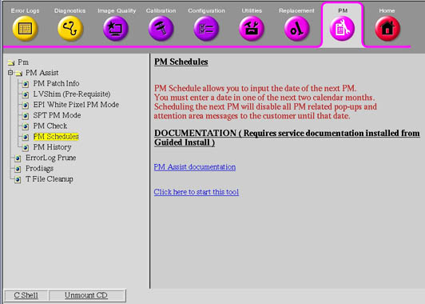
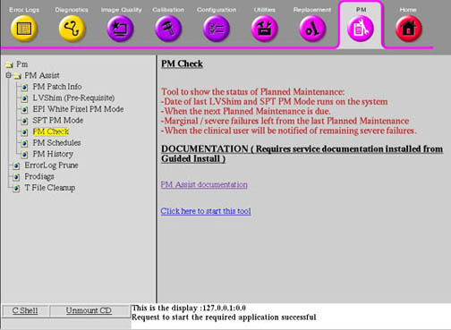

Proprietary to General Electric
Direction 5500113, Rev# 3
Discovery MR450 1.5T Service Methods
Module Version 2.0, Version Date 7/14/08
Proprietary to General Electric |
| Required Persons | Preliminary Reqs | Procedure | Finalization |
|---|---|---|---|
| 1 | Not Applicable | 15 mins | Not Applicable |
Install the USB Service Key into the system.
On the Service Desktop, start the Service Browser if it is not already running.
Select the [PM] tab.
Expand the [PM Assist] menu.
Select [PM Schedules]. Refer to Illustration 1.
Illustration 1: Starting the PM Scheduler

Click the Click here to start this tool link.
Enter a name and time for the next planned maintenance to create a new PM Record.
Install the USB Service Key into the system.
On the Service Desktop, start the Service Browser.
Select the [PM] tab.
Expand the [PM Assist] menu. See Illustration 2.
Click the Click here to start this tool link.
Illustration 2: Starting PM Check

If running this option for the first time, you must first run the LVShim, EPI White Pixel PM Mode, and SPT PM Mode procedures. After performing a Planned Maintenance check, which includes LVShim, EPI White Pixel, and SPT, the output includes the latest LVShim, EPI White Pixel, and SPT PM Pass/Fail results, and the PM schedule dates.
No finalization steps.